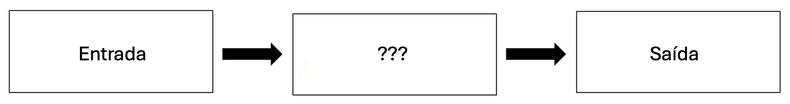
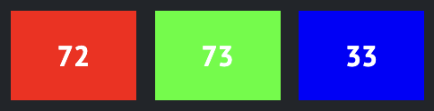
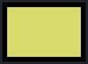

Essencialmente, a programação de computadores consiste em receber uma entrada (input) e produzir uma saída (output) — ou seja, resolver um problema. O que acontece entre a entrada e a saída, o que podemos chamar de “caixa-preta”, é o foco a ciência da computação.

Como os Computadores “Pensam”?
Para resolver problemas, precisamos de uma forma de representar informações. Imagine que precisamos registrar a presença em uma turma.
Uma maneira simples seria usar o sistema unário (base 1) - como levantar um dedo ou fazer um risco no papel para cada pessoa presente.
Computadores operam de forma diferente, utilizando o sistema binário (base 2). É da abreviação de “binary digit” que surge o termo bit.
Um bit é a menor unidade de informação. Ele funciona como uma lâmpada, podendo assumir apenas dois valores: 0 (desligado) ou 1 (ligado).
Uma única “lâmpada” (ou bit) só nos permite contar até 1. No entanto, quando combinamos várias delas, o poder de representação cresce significativamente.
Fisicamente, isso é realizado por milhões de transistores dentro do seu dispositivo (como um iPhone ou PC) que agem como interruptores: ligados e desligados.
Sistema Binário
Suponha que queremos começar a contar usando o sistema binário, ou seja, usando apenas zeros e uns. Como um computador entende que uma sequência de 0s e 1s representa o número 5 ou 137?
Usamos um sistema de pesos posicionais! Por exemplo, podemos atribuir um valor a cada posição possível em nosso dígito binário: 4, 2 e 1
Utilizando três bits, a representação do número zero seria:
4
2
1
0
0
0
Analogamente, a representação do número um seria:
4
2
1
0
0
1
Usando essa mesma lógica, poderíamos propor a seguinte representação do número dois:
4
2
1
0
1
0
A representação do número três seria dada por:
4
2
1
0
1
1
O número quatro seria representado da seguinte maneira:
4
2
1
1
0
0
Utilizando apenas três bits, o valor máximo que conseguimos alcançar é sete!
4
2
1
1
1
1
Pode parecer estranho no início, mas você já utiliza essa lógica todos os dias sem perceber! A estrutura que usamos para o sistema binário é exatamente a mesma que usamos para contar no nosso cotidiano.
Estamos acostumados a lidar com o sistema decimal (base 10), que possui dez dígitos à disposição: 0, 1, 2, 3, 4, 5, 6, 7, 8 e 9.
Assim, quando escrevemos o número 123, estamos na verdade seguindo um sistema de “posições” baseados em potências de 10:
Assim, não importa se estamos usando a base decimal ou binária; o funcionamento é o mesmo. A única coisa que muda é a base da potência!
Enquanto no sistema decimal as posições são potências de 10:
\(10^2\)
\(10^1\)
\(10^0\)
#
#
#
No sistema dos computadores (base 2), as posições são potências de 2:
\(2^2\)
\(2^1\)
\(2^0\)
#
#
#
Note que, no sistema binário, precisamos de três bits (as casas do quatro, do dois e do um) para representar todos os números no intervalo de 0 a 7.
Para representar o número 8, precisamos adicionar um quarto bit, correspondente à casa \(2^3\):
\(2^3\)
\(2^2\)
\(2^1\)
\(2^0\)
1
0
0
0
Geralmente, os computadores processam conjuntos de oito bits, conhecidos como byte. Com oito posições, conseguimos representar uma gama muito maior de valores!
Assim como os números são representados por padrões binários de zeros e uns, as letras também são representadas por combinações de zeros e uns!
Como existe sobreposição entre os padrões binários que representam números e os que representam letras, foi criado um padrão chamado ASCII (American Standard Code for Information Interchange).
O ASCII associa números específicos a caracteres específicos, permitindo que computadores representem texto de forma padronizada.
Por exemplo, a letra A foi associada ao número 65. No sistema binário, o número 65 é representado por 01000001. Podemos visualizar da seguinte maneira:
128
64
32
16
8
4
2
1
0
1
0
0
0
0
0
1
Se você recebesse uma mensagem de texto cujo conteúdo binário representasse os números 72, 73 e 33, ao convertê-los usando a tabela ASCII teríamos:
H
I
!
72
73
33
Felizmente, padrões como o ASCII permitem que todos os computadores “concordem” sobre qual número representa qual caractere. A seguir, um mapa dos valores ASCII:
0
NUL
16
DLE
32
SP
48
0
64
@
80
P
96
`
112
p
1
SOH
17
DC1
33
!
49
1
65
A
81
Q
97
a
113
q
2
STX
18
DC2
34
”
50
2
66
B
82
R
98
b
114
r
3
ETX
19
DC3
35
#
51
3
67
C
83
S
99
c
115
s
4
EOT
20
DC4
36
$
52
4
68
D
84
T
100
d
116
t
5
ENQ
21
NAK
37
%
53
5
69
E
85
U
101
e
117
u
6
ACK
22
SYN
38
&
54
6
70
F
86
V
102
f
118
v
7
BEL
23
ETB
39
’
55
7
71
G
87
W
103
g
119
w
8
BS
24
CAN
40
(
56
8
72
H
88
X
104
h
120
x
9
HT
25
EM
41
)
57
9
73
I
89
Y
105
i
121
y
10
LF
26
SUB
42
*
58
:
74
J
90
Z
106
j
122
z
11
VT
27
ESC
43
+
59
;
75
K
91
[
107
k
123
{
12
FF
28
FS
44
,
60
<
76
L
92
\
108
l
124
|
13
CR
29
GS
45
-
61
=
77
M
93
]
109
m
125
}
14
SO
30
RS
46
.
62
>
78
N
94
^
110
n
126
~
15
SI
31
US
47
/
63
?
79
O
95
_
111
o
127
DEL
Observações
Cada caractere ASCII ocupa 1 byte (8 bits).
Com 8 bits, é possível representar até 256 valores diferentes (0–255).
O ASCII padrão utiliza apenas 128 valores (0–127).
UNICODE
Com a evolução da comunicação global, o limite de 256 caracteres do padrão ASCII tornou-se insuficiente.
O padrão Unicode surgiu para expandir a quantidade de bits utilizados, permitindo representar virtualmente todos os sistemas de escrita da humanidade, além de símbolos e emojis.
Embora o padrão binário (o código) seja universal, cada fabricante (Apple, Google, Microsoft) pode estilizar visualmente o emoji de forma diferente.
O Unicode continua em expansão, adicionando novos caracteres e emojis regularmente para refletir a diversidade cultural e tecnológica.
RGB
Zeros e uns também definem cores através do sistema RGB (Red, Green, Blue). Cada cor é uma combinação de três intensidades numéricas que variam de 0 a 255 (8 bits).
Red, green, and blue (called RGB) are a combination of three numbers.

Os mesmos números do “HI!” (72, 73, 33) seriam interpretados por um leitor de imagem como um tom de amarelo musgo (R=72, G=73, B=33).

Esses três bytes necessários para representar as diferentes intensidades de vermelho, azul e verde (RGB) formam um pixel (ponto de cor). Imagens digitais nada mais são do que grandes matrizes de valores RGB.
Zeros e uns também podem ser usados para representar vídeos e músicas!
Algoritmos
A resolução de problemas é o coração da Ciência da Computação. Um algoritmo é um conjunto de instruções passo a passo para resolver um desafio.
Imagine um problema simples de buscar um nome em uma lista telefônica. Como resolver esse problema?
Uma abordagem seria ler página por página, do início ao fim.
Outra possibilidade seria verificar duas páginas por vez.
A final and perhaps better approach could be to go to the middle of the phone book and ask, “Is the name I am looking for to the left or to the right?” Then, repeat this process, cutting the problem in half and half and half.
Cada uma dessas estratégias é um algoritmo. Programadores transformam instruções humanas em código para que o computador execute o algoritmo.
Pseudocódigo
O pseudocódigo é uma forma de descrever algoritmos usando linguagem próxima da linguagem humana, mas organizada como código.
Considere o terceiro algoritmo usado para resolver o problema da lista telefônica. Poderíamos escrever o pseudocódigo da seguinte maneira:
1 Pegue a lista telefônica
2 Abra no meio da lista
3 Observe a página
4 Se a pessoa estiver na página
5 Ligue para a pessoa
6 Senão, se a pessoa estiver antes
7 Abra no meio da metade esquerda
8 Volte para a linha 3
9 Senão, se a pessoa estiver depois
10 Abra no meio da metade direita
11 Volte para a linha 3
12 Senão
13 Pare
Pseudocódigo é importante por duas razões. Primeiro, ele permite pensar na lógica antes de escrever código formal. Segundo, ele ajuda outras pessoas a entenderem seu raciocínio.
Observe que a linguagem utilizada em nosso pseudocódigo possui algumas características específicas. Primeiro, algumas linhas começam com verbos como “pegue”, “abra” ou “observe”. Mais adiante, chamaremos essas ações de funções.
Em segundo lugar, note que algumas linhas incluem instruções como se ou senão. Essas estruturas são chamadas de condicionais.
Em terceiro lugar, perceba que há expressões que podem ser avaliadas como verdadeiras ou falsas, como “a pessoa está antes no livro”. Chamamos essas de expressões booleanas.
Por fim, observe que existem instruções como “volte para a linha 3”. Essas estruturas são chamadas de loops (laços de repetição).
Esses blocos de construção são os fundamentos da programação.
No contexto de Python, que é discutido neste curso, utilizaremos cada um desses elementos básicos da programação.
O que vem pela frente?
Note
dasdas
input("What's your name? ")
Cell In[6], line 1 print("Hello Worl)
^
SyntaxError: unterminated string literal (detected at line 1)